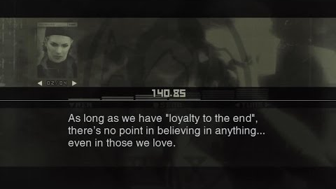

Loyalty and Sacrifices

One of the central themes of Metal Gear Solid 3 is loyalty and the cost that comes with it. Throughout the game, Snake is forced to question what it truly means to serve one’s country. The Boss embodies ultimate loyalty, willingly sacrificing her reputation and life for the greater good. Her actions challenge the idea that loyalty is always rewarded, suggesting instead that true patriotism may require personal loss and moral compromise.
Patriotism and Moral Ambiguity
The game explores the complexity of patriotism by showing how governments manipulate individuals for political gain. Snake begins the mission believing he is serving a just cause, but later discovers that the truth is far more complicated. The revelation about The Boss forces him to confront the reality that nations do not always act in the interest of truth or honor. This moral ambiguity becomes a defining moment in his transformation.
The Cost of War
Unlike many action games that glorify combat, Snake Eater emphasizes the physical and emotional toll of war. The wilderness survival mechanics reinforce vulnerability, while encounters like The Sorrow force players to confront the consequences of their actions. The game presents war not as heroic spectacle, but as a cycle of loss, sacrifice, and political manipulation.
Identity and Legacy
Snake's journey ultimately becomes one of identity. By the end of the game, he is no longer simply a soldier following orders. Being awarded the title “Big Boss” marks the beginning of a new identity shaped by disillusionment and independence. His legacy influences future generations and reshapes the ideological conflicts that define the Metal Gear series.